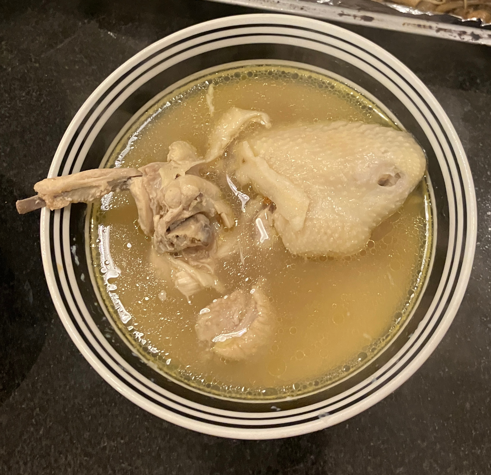

浓香原味鸡汤 ★ Original Chicken Soup
 4 servings
4 servings 20 minutes
20 minutes-
 youtube
youtube
 Meat
Meat Umami
Umami
真正原味的鸡汤

- 1 把 干香菇
取干香菇洗净，热水泡开备用，剪成小条，保留蘑菇水。
- 半 只 鸡
- 几 根 鸡腿肉
鸡或者鸡腿肉。鸡腿肉可去骨(骨头单独大火煮开10分钟，去浮沫)。
- -—–
少油，或者不放油。鸡皮朝下，小火煎鸡肉，煎至金黄，大约5分钟。
- -—–
开中火，加香菇，炒出香气。
- 5-7 薄片 姜
加姜，翻炒至鸡肉变色。
- 半 根 玉米
大火加蘑菇水、鸡骨汤(如果用鸡腿肉剔骨)，玉米，加水没过食材煮开，不要放太多水。
- -—–
炖煮十分钟后，加入盐，搅拌均匀即可食用。